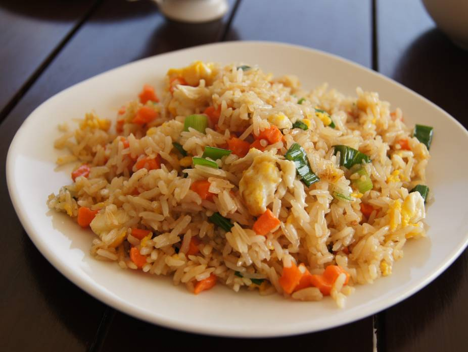
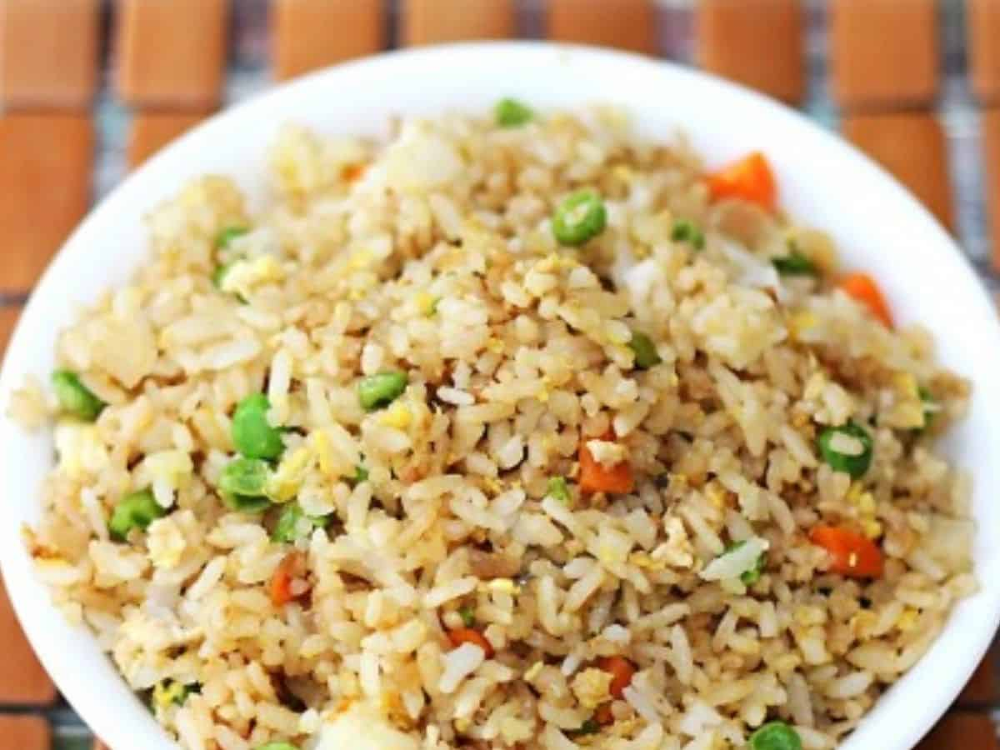
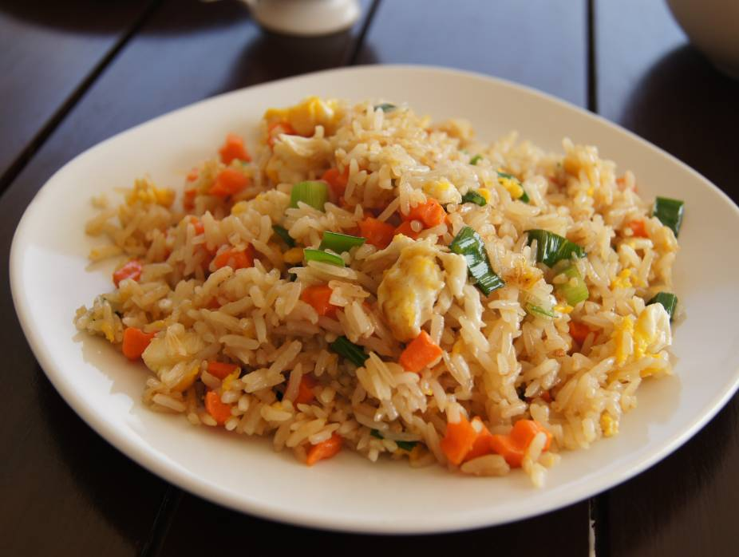
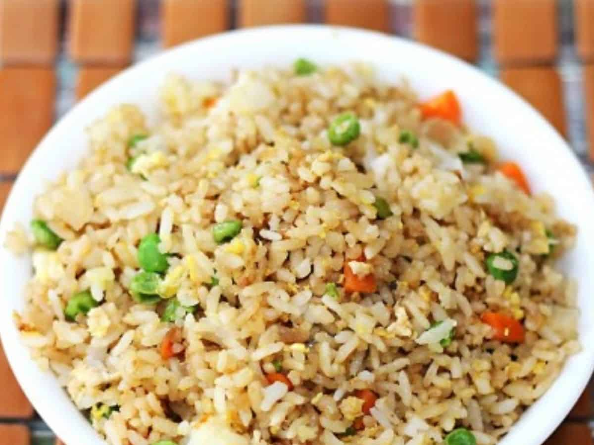

1.Cook Rice: Cook 2 cups of jasmine or long-grain rice, then let it cool completely (preferably overnight in the fridge).
2.Prepare Ingredients: Dice vegetables (like carrots, peas, and bell peppers), chop green onions, and beat 2 eggs. Also, have soy sauce and sesame oil ready.
3.auté Aromatics: Heat oil in a wok or large pan, and sauté minced garlic and ginger until fragrant.
4.Cook Eggs: Push the garlic and ginger to the side, pour in the beaten eggs, and scramble until just set.
5.Add Veggies: Add diced vegetables, and stir-fry until tender.
6. Add Rice: Add the cold rice to the pan, breaking up any clumps, and stir-fry everything together.
7. eason: Pour in soy sauce, a dash of sesame oil, and mix thoroughly. Adjust seasoning to taste with salt and pepper.
8. Finish: Toss in chopped green onions, and stir for another minute. Serve hot.
 


